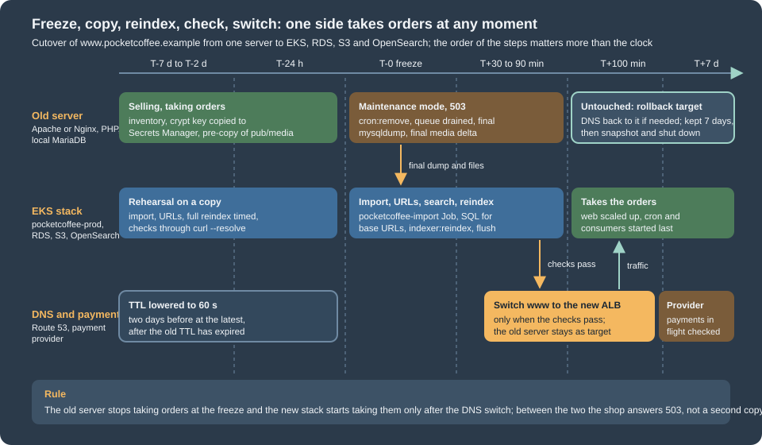

Cloud: Migrating from a Single Server
|
This content was generated with the assistance of AI and should be verified against the official documentation before being relied on in production. |
This page was written against Magento Open Source and Adobe Commerce 2.4.9 and Mage-OS 3.6.0 (PHP 8.5), RDS for MySQL 8.4 as the target database, Amazon OpenSearch Service 3.x, Amazon S3 for the media, and Amazon EKS with Kubernetes 1.36 or 1.37. It was checked on 2026-10-29. The Magento behaviour described here was read in the source of the 2.4-develop branch of magento/magento2 (Magento\Framework\Encryption\Encryptor, Magento\Framework\App\DeploymentConfig, Magento\RemoteStorage\Model\Synchronizer, the system.xml files of the Backend, Store and OpenSearch modules and QueueManagement) and in Adobe’s documentation. The shell scripts were checked with shellcheck, the PHP with php -l, and the SQL and the DEFINER filter were run against a scratch MariaDB 11.8 server that contained a small core_config_data table and a trigger. Nothing was run against a real AWS account, a real payment provider or a real Magento installation of Pocket Coffee, so every step must be rehearsed on a copy, and the sections below say what the documentation states and what you must test.
The shop is Pocket Coffee, the fictitious specialty-coffee seller of the other Magento pages. Its single server runs Nginx, PHP-FPM, MariaDB, OpenSearch and Valkey for https://www.pocketcoffee.example (three store views, es, en and us, and the modules PocketCoffee_RoastAdmin, PocketCoffee_Pay, PocketCoffee_Skeleton and PocketCoffee_Api). It moves to the cluster pocketcoffee-prod (namespace pocketcoffee, release pocketcoffee) in eu-west-1, with the database in the RDS instance pocketcoffee-prod (MySQL 8.4, database pocketcoffee, users mg_app and mg_migrate, empty table prefix), the media in the S3 bucket pocketcoffee-prod-media behind CloudFront, the search index in the OpenSearch domain pocketcoffee-prod and every secret in the Secrets Manager secret pocketcoffee/prod/magento. The target is described on Cloud: Reference Architecture, the database on Cloud: Managed Database (RDS and Aurora), the search, cache and queue services on Cloud: OpenSearch, Valkey and RabbitMQ as Managed Services, the image on Cloud: Container Image and Pipeline Build, the media on Cloud: Media and Remote Storage, the indexers and consumers on Cloud: Cron, Queue Consumers and Indexers and the Helm chart on Cloud: EKS Infrastructure and Helm Deployment. The old environment is the one described on Local Development Environments and Installation. The same move for the other shops is on PrestaShop: Migrating from a Single Server, on WooCommerce: Migrating a Store and, for WordPress, on Migrating from a Single Server; the AWS Database Migration Service and the DNS mechanics are explained once on Architecture, Migration and Hybrid.
The shape of a migration
A Magento shop on one server keeps five kinds of state: the database, the media (pub/media), the search index (in OpenSearch), the code and configuration (the Composer project, app/etc/config.php, app/etc/env.php) and a lot of transient state (sessions, cache, generated code, queue messages) that is not worth moving. The cluster stores each in a different place, so a migration is several moves that must agree with each other at the end.
| State on the old server | Where it goes | How it moves |
|---|---|---|
Database (all tables, including |
RDS |
|
|
S3 bucket |
|
Search index |
OpenSearch domain |
Not copied: rebuilt with |
Code, |
The container image |
Not copied: rebuilt from your repository; the differences on the old server are found in the inventory and committed first |
|
A file rendered from environment variables and the Secrets Manager secret |
Rebuilt, keeping |
Base URLs and media URLs |
Rows of |
Changed in the database after the import, see Base URLs |
Sessions, cache, |
Valkey, per-pod |
Not copied: customers log in again and the cache starts cold |
The rule that keeps a shop safe is the one of every migration with orders: at any moment exactly one side takes orders. The old server stays untouched until the new shop has answered real requests, and it stays available as the rollback.

Inventory of the old server
Do not start the new stack before you know what the old one contains. The inventory finds the facts that decide the method (the database size and engine, the queue backend, the indexer modes) and the differences between the production server and the repository the image is built from, which are the usual cause of "it worked on the old server". It reads the configuration by key path, never by value, so its output can be pasted into a ticket.
<?php
// env-key-paths.php - list the key paths of app/etc/env.php and a few harmless values. Never prints a secret.
declare(strict_types=1);
$file = $argv[1] ?? 'app/etc/env.php';
$env = require $file;
/** @param array<string, mixed> $node */
function walk(array $node, string $path, int $depth): void
{
foreach ($node as $key => $value) {
$here = $path === '' ? (string)$key : $path . '/' . $key;
if (is_array($value) && $depth < 3 && $here !== 'system') {
walk($value, $here, $depth + 1);
} else {
echo $here, "\n";
}
}
}
function get(array $env, string $path): string
{
$node = $env;
foreach (explode('/', $path) as $part) {
if (!is_array($node) || !array_key_exists($part, $node)) {
return '(not set)';
}
$node = $node[$part];
}
return is_scalar($node) ? (string)$node : '(array)';
}
echo "== key paths\n";
walk($env, '', 0);
echo "== harmless values\n";
foreach (['MAGE_MODE', 'backend/frontName', 'db/table_prefix', 'session/save', 'cache/frontend/default/backend',
'cache/frontend/page_cache/backend', 'queue/default_connection', 'remote_storage/driver',
'lock/provider', 'x-frame-options'] as $path) {
echo $path, ' = ', get($env, $path), "\n";
}
// the key itself is never printed: only how many keys the value holds (more than one after a key change)
$keys = preg_split('/\s+/', trim((string)($env['crypt']['key'] ?? '')), -1, PREG_SPLIT_NO_EMPTY);
echo 'crypt/key entries: ', is_array($keys) ? count($keys) : 0, "\n";
echo 'install/date present: ', isset($env['install']['date']) ? 'yes' : 'no', "\n";
echo 'db connections: ', implode(', ', array_keys($env['db']['connection'] ?? [])), "\n";Source: Adobe: env.php reference
#!/usr/bin/env bash
# inventory.sh - read-only facts about a Magento shop. Run on the old server as the owner of the files.
set -euo pipefail
MAGENTO_DIR="${MAGENTO_DIR:-/var/www/html}"
HERE="$(cd "$(dirname "$0")" && pwd)"
cd "$MAGENTO_DIR"
echo "== Magento, PHP and modules"
php bin/magento --version
php -v | head -n 1
php bin/magento module:status | head -n 3
php bin/magento module:status --disabled | wc -l
echo "== env.php (paths only)"
php "$HERE/env-key-paths.php" app/etc/env.php
echo "== Database"
# shellcheck disable=SC2016 # the PHP code is single-quoted on purpose
DB_NAME="$(php -r '$e = require "app/etc/env.php"; echo $e["db"]["connection"]["default"]["dbname"];')"
MYSQL=(mysql --defaults-extra-file="$HOME/.my.cnf" --batch)
"${MYSQL[@]}" -e "SELECT VERSION();"
"${MYSQL[@]}" -e "
SELECT table_name, ROUND((data_length + index_length) / 1024 / 1024) AS mb, engine
FROM information_schema.tables
WHERE table_schema = '${DB_NAME}'
ORDER BY (data_length + index_length) DESC LIMIT 15;"
echo "-- tables that are not InnoDB"
"${MYSQL[@]}" -e "
SELECT table_name, engine FROM information_schema.tables
WHERE table_schema = '${DB_NAME}' AND engine <> 'InnoDB' AND table_type = 'BASE TABLE';"
echo "-- objects with a DEFINER (triggers, routines, views)"
"${MYSQL[@]}" -e "
SELECT 'trigger' AS kind, trigger_name AS name, definer FROM information_schema.triggers WHERE trigger_schema = '${DB_NAME}'
UNION ALL SELECT 'routine', routine_name, definer FROM information_schema.routines WHERE routine_schema = '${DB_NAME}'
UNION ALL SELECT 'view', table_name, definer FROM information_schema.views WHERE table_schema = '${DB_NAME}';" | head -n 40
echo "-- queue backend: pending messages in the database queue"
"${MYSQL[@]}" -e "
SELECT status, COUNT(*) AS messages FROM queue_message_status GROUP BY status;"
echo "-- store views, websites and the URL rows (paths and values, no secrets)"
"${MYSQL[@]}" -e "SELECT store_id, code, website_id, is_active FROM store ORDER BY store_id;"
"${MYSQL[@]}" -e "
SELECT scope, scope_id, path, value FROM core_config_data
WHERE path REGEXP '^web/(un)?secure/base_(url|link_url|static_url|media_url)$' ORDER BY path, scope, scope_id;"
echo "== Indexers and cache"
php bin/magento indexer:status
php bin/magento cache:status | head -n 20
echo "== Media"
du -sh pub/media pub/media/* 2>/dev/null | sort -h | tail -n 12
find pub/media -type f | wc -l
echo "== Code changed on the server (not in the repository)"
find app/code -mindepth 2 -maxdepth 2 -type d 2>/dev/null
find app/design -mindepth 2 -maxdepth 2 -type d 2>/dev/null
test -f composer.lock && sha256sum composer.lock
test -d patches && ls patches
echo "== Scheduled tasks"
crontab -l 2>/dev/null || trueSource: Adobe: bin/magento CLI reference for Adobe Commerce on-premises and MySQL reference: the INFORMATION_SCHEMA TABLES table
What to do with each result:
-
The database size decides between a dump and DMS (see AWS DMS). A catalogue of tens of thousands of products with a few years of orders is typically some gigabytes, which a dump moves in minutes to an hour. Measure it in the rehearsal, never estimate it.
-
The biggest tables on a Magento shop are rarely the catalogue. Look for
cron_schedule,customer_visitor,quoteand its item tables (abandoned carts),report_eventandreport_viewed_product_index,url_rewrite,queue_messageand the grid and index tables. Whether a table may be emptied before the move depends on what your shop does with it; clean them on the old server a week before, not during the freeze, and keep what the business needs. -
Non-InnoDB tables. Core Magento tables are InnoDB; old shops and some extensions have MyISAM tables. They import into RDS, but they are not covered by
--single-transactionand are locked while they are dumped. Convert them withALTER TABLE ... ENGINE=InnoDBon a copy during the rehearsal. -
DEFINER. The list of triggers, routines and views with their definer is the input of the DEFINER section. A shop whose indexers run in "Update by Schedule" has the materialised-view triggers that Magento creates, one set per subscribed table, owned by the database user that created them.
-
The queue backend.
queue/default_connectionofenv.phpisdboramqp. Withdbthe pending messages are inqueue_messageandqueue_message_statusand travel with the dump (see the freeze step); withamqpthey are in the RabbitMQ of the old server, which the cluster does not read. The status values are inMagento\MysqlMq\Model\QueueManagement: 2 new, 3 in progress, 4 complete, 5 retry required, 6 error and 7 to be deleted. -
Several store views and URL rows. More than one scope row for a base URL means a multi-website or multi-host setup, as on Catalog, Multistore and B2B; the URL change below must handle every row.
-
Code that exists only on the server. A module under
app/code, a patched vendor file, a theme edited in place or apatches/folder exists only on the old server. Copy them into the repository and rebuild the image; the cluster has no way to keep a hand edit on a pod, and the old server stops being the source of the code. Thecomposer.lockhash tells you whether the repository and the server agree. -
Disabled modules and
config.php.app/etc/config.phplists every module and whether it is enabled, and the image carries the committed copy (see Cloud: Container Image and Pipeline Build). Comparemodule:statusof the old server with the committedconfig.phpbefore the first rehearsal. -
Scheduled tasks. The crontab of the file-system owner holds the block that
cron:installwrote between#~ MAGENTO STARTand#~ MAGENTO END, plus anything of your own (a feed export, a backup). The Magento block is replaced by the CronJobpocketcoffee-cron; anything else becomes another CronJob. Remove the old crontab at the freeze, or both sides run the same jobs.
Preparing the target
Do not run setup:install against the production database. The installer creates a fresh schema and a new crypt/key, which is the opposite of what a migration needs; the Job pocketcoffee-install of the chart is for a shop that starts empty. The target is prepared in this order:
-
The RDS instance, its parameter group (
utf8mb4,log_bin_trust_function_creators, amax_allowed_packetat least as large as the largest row of the dump) and the two usersmg_appandmg_migrateexist, as described on Cloud: Managed Database (RDS and Aurora). The databasepocketcoffeeis empty. -
The Secrets Manager secret
pocketcoffee/prod/magentoholds the database passwords and thecrypt_keyof the old shop (see Rebuilding env.php). The ExternalSecretpocketcoffee-magentohas produced the Kubernetes Secret of the same name. -
The OpenSearch domain, the Valkey replication groups and the Amazon MQ broker exist and are reachable from the cluster (Cloud: OpenSearch, Valkey and RabbitMQ as Managed Services).
-
The image
123456789012.dkr.ecr.eu-west-1.amazonaws.com/pocketcoffee/magentowas built from your repository with the same Magento version the old shop runs. Migrate first and upgrade afterwards: a move that is also a version upgrade has two causes for every failure. The upgrade itself is on Cloud: Releases and Zero-Downtime Deployments and Upgrades. -
The S3 bucket
pocketcoffee-prod-mediaand the migration bucketpocketcoffee-prod-migration(a temporary bucket for the dump, see Import into RDS) exist; the bucket is private and the CloudFront distribution reads it with an origin access control. -
The Deployment
pocketcoffee-webcan be scaled to zero (web.replicas: 0in the values) and the CronJobpocketcoffee-croncan be suspended until the data is in place, so no pod and no scheduler starts against an empty or half-imported database.
The rehearsal repeats everything on this page against a copy: a dump of the old shop, a scratch database and a scratch bucket or prefix. It is the only way to learn how long the dump, the import, the media delta and the reindex take, which decides the length of the freeze.
Moving the database
Dump
Take the dump from a consistent snapshot without locking the shop. For InnoDB tables --single-transaction does that; the shop keeps selling while the dump runs, which is why the final dump of the cutover is taken only after the freeze.
#!/usr/bin/env bash
# dump.sh - consistent dump of the Magento database from the old server, with DEFINER clauses removed.
set -euo pipefail
: "${DB_NAME:?set DB_NAME}"
OUT="${OUT:-pocketcoffee-$(date +%Y%m%d-%H%M).sql.gz}"
# MySQL source only: RDS refuses the GTID_PURGED statement. MariaDB's dump tool does not know the option.
EXTRA_OPTS=()
if [ "${SOURCE_ENGINE:-mariadb}" = "mysql" ]; then
EXTRA_OPTS+=(--set-gtid-purged=OFF)
fi
# --single-transaction consistent InnoDB snapshot, no table locks
# --routines --events stored routines and events (extensions may add them)
# --triggers is the default; written so the intent is visible: Magento creates triggers for the indexers
# --default-character-set the tables are utf8mb4; the client default can differ on an old server
# --no-tablespaces the dump user does not need the PROCESS privilege
# --hex-blob binary columns survive any client character set
# the sed filter deletes DEFINER=`user`@`host` (and the unquoted form) from every line except data rows,
# which start with INSERT INTO (MySQL) or with an opening parenthesis (the rows MariaDB's dump tool puts on their own lines)
# shellcheck disable=SC2016 # the sed expression is single-quoted on purpose
mysqldump \
--defaults-extra-file="$HOME/.my.cnf" \
--single-transaction \
--routines --events --triggers \
--default-character-set=utf8mb4 \
--no-tablespaces \
--hex-blob \
--max-allowed-packet=256M \
"${EXTRA_OPTS[@]}" \
"$DB_NAME" \
| sed -E '/^(INSERT INTO|\()/!s/DEFINER[ ]*=[ ]*(`[^`]+`|[A-Za-z0-9_$%.-]+)@(`[^`]+`|[A-Za-z0-9_$%.-]+)//g' \
| gzip -9 > "$OUT"
# a dump that ends without this marker is truncated
zcat "$OUT" | tail -n 1 | grep -q 'Dump completed' || { echo "truncated dump: $OUT" >&2; exit 1; }
echo "DEFINER clauses left in the dump: $(zcat "$OUT" | grep -c 'DEFINER=' || true)"
sha256sum "$OUT" > "$OUT.sha256"
echo "$OUT"Source: MySQL reference: mysqldump and Amazon RDS User Guide: Importing data from a MySQL or MariaDB DB to an Amazon RDS for MySQL DB instance
The options matter in these ways on Magento:
-
Character set. Magento creates its tables with
utf8mb4(older installations may haveutf8, three bytes); dumping and importing with--default-character-set=utf8mb4is what keeps accents and the euro sign of theesstore view intact. A shop dumped withlatin1by a client default imports "successfully" with corrupted text. -
The size of one row. Product, CMS and
url_rewriterows can be large; setmax_allowed_packeton both the dump command and the RDS parameter group. -
A MariaDB source and a MySQL 8.4 target. Magento 2.4.9 supports both engines (see Versions, Lifecycle and Requirements), but a MariaDB dump can contain syntax that MySQL does not accept. The Magento schema is plain; the usual cause is an extension table. The rehearsal import into a scratch RDS instance finds it, and moving MariaDB to RDS for MariaDB avoids the question. A MySQL 8.0 client’s
mysqldumpagainst a MariaDB or 5.7 server needs--column-statistics=0. -
The tool name. On a MariaDB server
mysqldumpcan be a link tomariadb-dump; the options above are accepted by both, except--set-gtid-purged, which the script sets only for a MySQL source.
DEFINER and log_bin_trust_function_creators
Two RDS rules decide whether triggers, routines and views survive the import, and Magento has triggers: in "Update by Schedule" mode every indexer subscribes to its source tables with database triggers (the shop of this page uses that mode).
-
DEFINER. A trigger, view, routine or event is created with a
DEFINER(a user and a host). The dump writes the definer of the old server, for examplemagento@localhostSUPERprivilege, so creating an object whose definer is another or non-existent user fails (MySQL error 1227, "Access denied; you need (at least one of) the SUPER or SET_USER_ID privilege(s)").mysqldumphas no option to leave the definer out (the 8.4 option table lists none), so the clause is removed withsed, as the script above does betweenmysqldumpandgzip. Without a definer, MySQL uses the importing user,mg_migrate. A trigger or view then belongs tomg_migrate, which is why that account must keep existing: dropping it later invalidates the objects. The alternative is to import with a definer that exists on RDS and keep it; the clean choice for a shop is one owner of the schema objects, the migration user. -
Binary logging. RDS keeps binary logging on when automated backups are on. With binary logging on, MariaDB refuses to create a stored function or a trigger for a user without
SUPERunlesslog_bin_trust_function_creatorsis1; MySQL 8.4 created the trigger without it in the test on the managed database page, and the parameter group sets it anyway. The parameter lives in the RDS parameter group (pocketcoffee-magento-mysql84, see the managed database page), not in the session, and it is a dynamic parameter. Magento’s triggers fall under this rule; the symptom of a missing parameter on MariaDB is the error "You do not have the SUPER privilege and binary logging is enabled (you might want to use the less safe log_bin_trust_function_creators variable)" at the firstCREATE TRIGGERof the import. Leave the parameter as the managed database page sets it; the importing user needsTRIGGERas well as the DDL privileges. -
sedand the data rows. The filter skips the lines of data: those that begin withINSERT INTO(MySQL writes all the rows of a table on one such line) and those that begin with an opening parenthesis (the dump tool of MariaDB 11.8 writes each row on its own line, which the scratch test showed). A product description or CMS block that happens to contain the textDEFINER=is therefore not touched. A trigger, a view or a routine is one line of the dump, so the substitution reaches the whole statement. The wordsSQL SECURITY DEFINERof a view stay: they are valid without a definer clause and refer to the importing user. -
Views carry the database name. The dump writes the definition of a view with the schema name inside (
olddb.tablesedpass (the same exclusion of data rows), as in the example below the list. The inventory lists the views; Magento Open Source creates few of its own, but extensions and, on shops that use Multi-Source Inventory, the default stock viewinventory_stock_1are views (check yours).
Replacing the schema name of the old database (here magento) in a dump that goes into the database pocketcoffee, in the same way as the DEFINER filter, excluding data rows:
# shellcheck disable=SC2016 # the sed expression is single-quoted on purpose
zcat pocketcoffee-final.sql.gz \
| sed -E '/^(INSERT INTO|\()/!s/`magento`\./`pocketcoffee`./g' \
| gzip -9 > pocketcoffee-final-renamed.sql.gzSource: MySQL reference: mysqldump
The filter was checked on a scratch MariaDB 11.8: a dump with a trigger, a view and a row of text that contained the string DEFINER= had three occurrences before the filter and none in the DDL after it, the data row was left intact, the import of the unfiltered dump as an unprivileged user stopped with error 1227 and the import of the filtered one created the trigger under the importing user (the view needed the schema-name replacement of the bullet on views). The behaviour on RDS for MySQL 8.4 is documented, not run, here.
Import into RDS
The cluster reaches RDS through private subnets and a security group that only allows the node group, so a laptop cannot import directly. Two patterns work: a Job in the cluster (nothing to maintain) or a bastion host in the VPC. Both use TLS with the RDS CA bundle. The Job below downloads the dump from the migration bucket in an init container, imports it with the migration user, and then runs the URL statements of the next section; the SQL file arrives in the ConfigMap pocketcoffee-cutover-sql. The password of mg_migrate comes from the Kubernetes Secret pocketcoffee-magento (key MAGENTO_MIGRATE_DB_PASSWORD, created from Secrets Manager), never from the manifest.
apiVersion: batch/v1
kind: Job
metadata:
name: pocketcoffee-import
namespace: pocketcoffee
spec:
backoffLimit: 0
ttlSecondsAfterFinished: 86400
template:
spec:
restartPolicy: Never
serviceAccountName: pocketcoffee-migrate # Pod Identity role with s3:GetObject on pocketcoffee-prod-migration only
volumes:
- name: work
emptyDir: {}
- name: sql
configMap:
name: pocketcoffee-cutover-sql
initContainers:
- name: fetch
image: amazon/aws-cli:2.34.0
args:
- s3
- cp
- s3://pocketcoffee-prod-migration/pocketcoffee-final.sql.gz
- /work/dump.sql.gz
volumeMounts:
- name: work
mountPath: /work
containers:
- name: import
image: mysql:8.4
command: ["/bin/bash", "-ec"]
args:
- |
curl -fsSL -o /work/rds-ca.pem https://truststore.pki.rds.amazonaws.com/global/global-bundle.pem
MYSQL=(mysql --host="${DB_HOST}" --user=mg_migrate --password="${DB_PASSWORD}"
--default-character-set=utf8mb4 --ssl-mode=VERIFY_IDENTITY --ssl-ca=/work/rds-ca.pem)
zcat /work/dump.sql.gz | "${MYSQL[@]}" pocketcoffee
{ echo "SET @old_base='${OLD_BASE}'; SET @new_base='${NEW_BASE}'; SET @new_media='${NEW_MEDIA}';"
cat /sql/urls.sql; } | "${MYSQL[@]}" pocketcoffee
"${MYSQL[@]}" pocketcoffee -e "SELECT COUNT(*) AS orders FROM sales_order; SELECT COUNT(*) AS customers FROM customer_entity;"
env:
- name: DB_HOST
value: pocketcoffee-prod.example1234.eu-west-1.rds.amazonaws.com
- name: OLD_BASE
value: https://www.pocketcoffee.example/
- name: NEW_BASE
value: https://www.pocketcoffee.example/
- name: NEW_MEDIA
value: https://media.pocketcoffee.example/
- name: DB_PASSWORD
valueFrom:
secretKeyRef:
name: pocketcoffee-magento
key: MAGENTO_MIGRATE_DB_PASSWORD
volumeMounts:
- name: work
mountPath: /work
- name: sql
mountPath: /sqlSource: Kubernetes: Jobs and Amazon RDS User Guide: Using SSL/TLS to encrypt a connection to a DB instance
The host name is a placeholder: use the endpoint of your instance (tofu output or aws rds describe-db-instances). The importing user needs CREATE, ALTER, DROP, INDEX, INSERT, LOCK TABLES, REFERENCES and TRIGGER on the database, and the same privileges that setup:upgrade needs, which is why a separate mg_migrate exists and the shop runs as mg_app with data privileges only. The Job script ends with two counts that you compare with the old server in the verification step. From a bastion the commands are the same with mysql run directly.
#!/usr/bin/env bash
# import-from-bastion.sh - the same import from a host inside the VPC.
set -euo pipefail
: "${DB_HOST:?set DB_HOST to the RDS endpoint}"
: "${DUMP:?set DUMP to the dump file}"
CA="${CA:-global-bundle.pem}"
[ -f "$CA" ] || curl -fsSL -o "$CA" https://truststore.pki.rds.amazonaws.com/global/global-bundle.pem
# the password is read from the environment by the client, not typed on the command line
export MYSQL_PWD
MYSQL_PWD="$(aws secretsmanager get-secret-value --secret-id pocketcoffee/prod/magento \
--query SecretString --output text | jq -r '.db_migrate_password')"
zcat "$DUMP" | mysql --host="$DB_HOST" --user=mg_migrate \
--default-character-set=utf8mb4 --ssl-mode=VERIFY_IDENTITY --ssl-ca="$CA" pocketcoffeeThe key db_migrate_password is the one of the secret on the managed database page. For the import time, count on the dump time or more: index maintenance on RDS is the slow part, and a larger instance class for the import day, resized down afterwards, is a legitimate trick.
AWS DMS for a shorter freeze
A dump and import takes the freeze as long as the dump, the upload and the import together. When that exceeds the maintenance window the business accepts, AWS Database Migration Service copies the database once (full load) and then replays the changes of the source (change data capture) until you stop the task at the cutover. The source needs binary logging in ROW format with a retention longer than the full load, a replication user and network access from the replication instance; those requirements, the limits of DMS (it copies tables and primary keys, but not secondary indexes, views, triggers or routines the way a dump does) and the schema-first method are explained on the WordPress page and on Architecture, Migration and Hybrid. They apply unchanged to the Magento tables.
What Magento adds:
-
Create the schema with a
--no-datadump (with the same DEFINER filter, and with--routines --events --triggers) before the task starts, so every index, default, foreign key and trigger exists; DMS then only loads rows. Magento’s schema has many foreign keys, so DMS must load with them disabled or in an order that respects them, or the target must be configured accordingly; read the DMS documentation for MySQL targets and test it. -
Binary logging on a shared or managed host is usually not available. DMS is a method for a VM or dedicated server you control.
-
DMS does not make two writers safe. You still freeze the shop at the end. It shortens the copy, not the freeze rule.
-
Compare, do not trust. After the task stops, compare row counts and a checksum of the tables that matter (
sales_order,sales_order_item,quote,customer_entity,core_config_data,catalog_product_entity) between the two databases (see Verifying that nothing was lost).
Base URLs and the settings bound to the old host
Magento stores its URLs in core_config_data, per scope, and the Admin, the URL generation, the cookies and the redirects read them from there. A URL that points to the old environment is the classic result of a copied database: the storefront redirects to the old host, or the admin form posts to it. There are two cases for the Pocket Coffee shop, and the SQL below handles both.
-
The domain does not change (
https://www.pocketcoffee.example/on the old server and on the cluster, DNS decides which one answers). The base URL rows stay as they are. Only the media URLs change, because the media now come fromhttps://media.pocketcoffee.example/. This is the preferred case: you test the new stack withcurl --resolve(see Verifying that nothing was lost) against the real host name, and the cutover is a DNS change, nothing else. -
The domain changes (a rehearsal on
https://staging.pocketcoffee.example/, a dump taken from a local environment such as the.testhosts of the local environments, or an apex-to-wwwchange). Every base URL row of every scope must be rewritten, and so must the hard-coded absolute URLs in content.
The paths, read in the system.xml of the Store and Backend modules and in the Adobe documentation, are:
| Path | Meaning |
|---|---|
|
The base URLs of the storefront for HTTP and HTTPS, per scope. They end with |
|
The base URL for links; by default the placeholders |
|
The URL of |
|
The URL of the media; set to |
|
Force HTTPS in the storefront and in the Admin; both |
|
The header the TLS-terminating proxy sends ( |
|
The cookie domain; if it holds the old host, customers cannot log in on the new one |
|
Redirect to the base URL and put the store code in the URL; check that they match the behaviour you want |
|
A custom Admin URL and path, if the old shop set them; the cluster routes the admin by the |
-- urls.sql - rewrite the base URLs after the import. Run with the three variables set first:
-- SET @old_base = 'https://www.pocketcoffee.example/'; SET @new_base = 'https://www.pocketcoffee.example/';
-- SET @new_media = 'https://media.pocketcoffee.example/';
-- 1. what is stored now (paths and values of URL settings, no secrets)
SELECT scope, scope_id, path, value
FROM core_config_data
WHERE path REGEXP '^web/(un)?secure/(base_url|base_link_url|base_static_url|base_media_url|use_in_frontend|use_in_adminhtml|offloader_header)$'
OR path IN ('web/cookie/cookie_domain', 'web/url/redirect_to_base', 'web/url/use_store',
'admin/url/use_custom', 'admin/url/custom', 'admin/url/use_custom_path', 'admin/url/custom_path')
ORDER BY path, scope, scope_id;
-- 2. rewrite the base URL rows of every scope (no-op when old and new are the same)
UPDATE core_config_data
SET value = REPLACE(value, @old_base, @new_base)
WHERE path IN ('web/unsecure/base_url', 'web/secure/base_url', 'web/unsecure/base_link_url', 'web/secure/base_link_url')
AND value LIKE CONCAT(@old_base, '%');
-- 3. the media URL comes from the CDN: replace the default-scope rows
DELETE FROM core_config_data
WHERE scope = 'default' AND scope_id = 0
AND path IN ('web/unsecure/base_media_url', 'web/secure/base_media_url');
INSERT INTO core_config_data (scope, scope_id, path, value)
VALUES ('default', 0, 'web/unsecure/base_media_url', @new_media),
('default', 0, 'web/secure/base_media_url', @new_media);
-- 4. rows of narrower scopes that override the media URL are listed, not changed: look at them
SELECT scope, scope_id, path, value FROM core_config_data
WHERE path IN ('web/unsecure/base_media_url', 'web/secure/base_media_url') AND scope <> 'default';
-- 5. content with the old absolute URL (CMS and category descriptions; products and widgets are checked the same way)
SELECT 'cms_page' AS tbl, COUNT(*) AS rows_with_old_url FROM cms_page WHERE content LIKE CONCAT('%', @old_base, '%')
UNION ALL SELECT 'cms_block', COUNT(*) FROM cms_block WHERE content LIKE CONCAT('%', @old_base, '%');Notes on the statements:
-
Rows hold the scope.
scopeisdefault,websitesorstores, andscope_idis the id of the website or store. A narrower scope overrides the default, so a rewrite that only touches thedefaultrows leaves thees,enandusstore views pointing at the old host. TheUPDATEdoes not look at the scope for that reason. -
The unique key.
core_config_datahas a unique key onscope,scope_idandpath, so theDELETEfollowed by anINSERTcannot create a duplicate. The script does not useINSERT ... ON DUPLICATE KEY UPDATEbecause its portable forms differ between MySQL 8.4 and MariaDB. -
Content with absolute URLs. Editors paste the full URL into CMS pages and blocks; the media directives (
{{media url="..."}}) are relative and need no change. Count first; replace in a rehearsal with a reviewed statement, because a blindREPLACEof the host also changes links to other pages that you may want to keep as they are.
# after the first pod is up (see the runbook), the same values through the CLI
kubectl -n pocketcoffee exec deploy/pocketcoffee-web -c php-fpm -- bin/magento config:show web/unsecure/base_url
kubectl -n pocketcoffee exec deploy/pocketcoffee-web -c php-fpm -- bin/magento config:show --scope=stores --scope-code=es web/secure/base_url
kubectl -n pocketcoffee exec deploy/pocketcoffee-web -c php-fpm -- bin/magento config:show web/secure/base_media_urlSource: Adobe: Set configuration values
A value written with config:set --lock-env goes to env.php and one written with --lock-config to config.php, and both make the field read-only in the Admin. Neither is what you want for URLs on a cluster whose env.php is a read-only ConfigMap: keep plain config:set (database) for values that editors may change and put environment-specific settings in the env.php template. A value in env.php or config.php takes precedence over the same path in core_config_data, so an old system section copied from the old server’s env.php would silently override the rows you just corrected; see Rebuilding env.php.
The encryption key and rebuilding env.php
app/etc/env.php is the file that makes the image a copy of this shop, and the one place where a careless migration destroys data. Never copy it as it is, and never create it by running the installer.
Why the key matters. Magento encrypts some values before it stores them, with the key in crypt/key of env.php: the values of configuration fields that use the encrypted backend model (payment gateway credentials, SMTP passwords and similar), the secrets of extensions that use EncryptorInterface, and anything else your modules encrypt. The value has the form <key version>:<cipher>:<data> (read in Magento\Framework\Encryption\Encryptor; the current cipher is 3, ChaCha20-Poly1305). A new key cannot decrypt them. The result is not an error at the import but a payment method that stops authorising, a mail server that rejects the stored password, or a decryption exception at the first use. Keep crypt/key identical to the old shop’s value. In the Pocket Coffee setup it is only a secret reference: the value lives in the secret pocketcoffee/prod/magento under the key crypt_key, reaches the pods as the environment variable MAGENTO_CRYPT_KEY, and is never written into a manifest, an image, a ticket or a chat. How the first-install Job handles a key for a shop that starts empty is on the Helm page; it is not used for a migration.
The value can hold more than one key. Encryptor splits the value on whitespace (preg_split('/\s+/s', trim(...))) and uses the last key for new encryption and the earlier ones, by version number, for old data. A shop that changed its key from the Admin has several keys on separate lines in crypt/key; copy all of them, in order, as the secret crypt_key. The inventory prints how many the old file holds.
Which values can be checked. You can find the encrypted rows without reading them: count the values of core_config_data that have the shape of an encrypted value, list only their paths, and after the migration open one of them through the feature that uses it (a test payment in the sandbox of the provider, a test mail).
-- candidates for encrypted values (paths only, never the values); compare the list on the old and the new database
SELECT scope, scope_id, path
FROM core_config_data
WHERE value REGEXP '^[0-9]+:[0-3]:'
ORDER BY path, scope, scope_id;How to move the key. It crosses from the old server to Secrets Manager through a channel that does not leave a trace: an SSH stream into a file in memory (umask 077, on a tmpfs such as /dev/shm) on an administrator’s workstation, then put-secret-value, then the file is deleted. The key is never an argument of a command (arguments appear in the process list and in shell history), never printed and never stored in a repository. The script reads the key from the old server’s env.php by key path and handles the value only inside the pipe; the jq call keeps the other keys of the secret.
#!/usr/bin/env bash
# copy-crypt-key.sh - copy crypt/key of the old shop into the secret pocketcoffee/prod/magento (key crypt_key).
# Run on an administrator workstation with AWS credentials for the secret and SSH access to the old server.
# The value is neither printed nor passed as an argument; it passes through a private file in memory.
set -euo pipefail
umask 077
: "${OLD_HOST:?set OLD_HOST to the old server (user@host)}"
OLD_DIR="${OLD_DIR:-/var/www/html}"
SECRET_ID="${SECRET_ID:-pocketcoffee/prod/magento}"
WORK="$(mktemp -d /dev/shm/crypt.XXXXXX)"
trap 'rm -rf "$WORK"' EXIT
# 1. the key (every line of it) travels over SSH into a file
# shellcheck disable=SC2029 # OLD_DIR is meant to expand on the client side
ssh "$OLD_HOST" "cd '$OLD_DIR' && php -r '\$e = require \"app/etc/env.php\"; echo \$e[\"crypt\"][\"key\"];'" > "$WORK/crypt_key"
test -s "$WORK/crypt_key" || { echo "empty crypt/key, stop" >&2; exit 1; }
# 2. merge it into the existing secret (the other keys stay) and write a new version
aws secretsmanager get-secret-value --secret-id "$SECRET_ID" --query SecretString --output text > "$WORK/secret.json"
jq --rawfile key "$WORK/crypt_key" '.crypt_key = $key' "$WORK/secret.json" > "$WORK/secret-new.json"
aws secretsmanager put-secret-value --secret-id "$SECRET_ID" --secret-string "file://$WORK/secret-new.json" > /dev/null
# 3. only the length is shown, to compare with the same measurement on the old server
printf 'crypt_key stored, %s bytes\n' "$(wc -c < "$WORK/crypt_key" | tr -d ' ')"The script shows only the length, which proves that something was stored and lets you compare it with the same measurement on the old server; it never shows a part of the key. Restrict secretsmanager:PutSecretValue on that secret to the people who run the migration and remove it afterwards. The key rotation that follows the migration is part of the operations page, Cloud: Autoscaling, Observability, Backups and Security; do not rotate during the migration.
What else env.php contains, and where each part comes from in the cluster. The new file is the template in the ConfigMap pocketcoffee-env-php, read with getenv() (see the Helm page). Compare it, key path by key path, with the output of the inventory:
Key path in env.php |
On the old server | In the cluster |
|---|---|---|
|
The key of the shop |
Identical, from the secret reference |
|
The installation date of the old shop |
Keep the old value. |
|
The old prefix and the local database |
The same prefix as the dump (empty for Pocket Coffee; do not rename tables), the RDS endpoint and the user |
|
The old Admin path, often |
|
|
Files, or Redis on the same host |
Valkey replication groups |
|
The |
The Amazon MQ broker |
|
|
The driver |
|
Often |
|
|
The cache types enabled |
Keep all of them enabled; |
|
The domains allowed for downloadable-product links |
Keep the list and add the new media host if downloadable products use absolute URLs |
|
Settings written with |
Review each: the old values name the old hosts (for example |
config.php is not copied either. Run bin/magento app:config:dump on a configured reference system (it needs an installed database, so it is not a step of the image build itself; the build consumes the committed file, see Cloud: Container Image and Pipeline Build); it writes the shared, non-sensitive configuration (modules, scopes, themes and system settings that are not environment-specific) into app/etc/config.php, which is committed, while the sensitive and system-specific settings stay out of it. Adobe states that config.php is the file shared by all instances and env.php is the environment-specific one that is not committed. A config.php produced from a production dump is the evidence that the modules list and the website and store codes of the image match the database; if the image has a module that the database does not know, setup:db:status reports it and the upgrade Job handles it.
Moving the media
pub/media holds what the shop writes: the product and category images (catalog/), the files of the editor (wysiwyg/), customer uploads, downloadable-product files, the import folder and the generated caches. The target is the S3 bucket pocketcoffee-prod-media, used through the AWS S3 driver of Magento’s remote storage (the design, the CloudFront distribution and the local paths that stay per pod are on Cloud: Media and Remote Storage). Two things move: the files, and the information that the shop now reads them from S3.
What not to copy. The folder catalog/product/cache holds the resized product images that Magento generates from the originals on demand; they are regenerated, they are usually the largest part of pub/media and copying them only moves bytes that the first visitors would regenerate anyway. tmp/ holds temporary uploads. Copy everything else. Look at the real tree in the inventory: an extension may keep files under its own folder.
Two ways to copy.
-
aws s3 syncfrom the old server (or from a machine that mounts it). It resumes after an interruption, skips what is already in the bucket, and takes--excludepatterns. It needs an IAM identity with write access to one bucket and no Kubernetes access. -
bin/magento remote-storage:syncon a Magento instance whose configuration already uses the S3 driver and that still has the local files. Adobe documents the command without options. In the source (Magento\RemoteStorage\Model\Synchronizer) it walks themediadirectory, creates in the bucket the folders and files that are missing, skips those that exist, and has no exclude option, so it would also upload the resized-image cache.
#!/usr/bin/env bash
# sync-media-to-s3.sh - copy pub/media of the old server to the bucket of the new stack.
# Run it for the pre-copy (days before) and again after the freeze: the second run moves only the delta.
set -euo pipefail
SRC="${SRC:-/var/www/html/pub/media}"
BUCKET="${BUCKET:-pocketcoffee-prod-media}"
REGION="${REGION:-eu-west-1}"
# dry run first: shows what would be copied and what the size will be
aws s3 sync "$SRC" "s3://$BUCKET" --region "$REGION" \
--exclude "catalog/product/cache/*" \
--exclude "tmp/*" \
--exclude ".htaccess" --exclude "*/.htaccess" \
--dryrun | tail -n 5
if [ "${DRY_RUN_ONLY:-0}" = "1" ]; then exit 0; fi
aws s3 sync "$SRC" "s3://$BUCKET" --region "$REGION" \
--exclude "catalog/product/cache/*" \
--exclude "tmp/*" \
--exclude ".htaccess" --exclude "*/.htaccess"
# the same count on both sides (the excluded paths are not counted)
echo "local files: $(find "$SRC" -type f -not -path '*/catalog/product/cache/*' -not -path '*/tmp/*' -not -name .htaccess | wc -l)"
echo "bucket files: $(aws s3 ls "s3://$BUCKET" --recursive --region "$REGION" | wc -l)"Source: AWS CLI: aws s3 sync
The script uses the credentials of the machine’s AWS profile (a role, for the old server a temporary identity from aws sso or an assumed role); never put access keys into the script. The .htaccess files of pub/media protect folders on Apache (downloadable files are denied to direct access); they mean nothing on S3 and must not be copied. Protect the same folders on the new side: the downloadable-product files, customer uploads and the import folder must not be readable through the public media host; the CloudFront and bucket-policy design that does it is on the media page. Test one downloadable product after the move.
Magento then has to read the files from the bucket. The settings are documented by Adobe and are part of the new env.php (remote_storage) built from the environment; the commands are shown here because the rehearsal runs them once against a copy.
# on a copy of the shop that has the files locally and the database imported
bin/magento setup:config:set --remote-storage-driver="aws-s3" \
--remote-storage-bucket="pocketcoffee-prod-media" --remote-storage-region="eu-west-1" -n
bin/magento config:set system/media_storage_configuration/media_database 0
bin/magento remote-storage:sync # uploads what the bucket does not have yet
bin/magento cache:flushNo access keys: the optional --remote-storage-key and --remote-storage-secret are omitted, so the SDK uses the pod’s IAM role (pocketcoffee-prod-magento, Pod Identity), as Adobe’s page allows. The Adobe page states two constraints that matter here: generated or cached images are written on the local file system, so pub/media and similar folders need the permissions they have with local storage, and code must use Magento’s file adapters instead of native PHP file functions, because the files are not on the disk. That is why extensions of the old shop that write into pub/media with file_put_contents must be found in the inventory and tested in the rehearsal. The remote-storage module also caches file metadata (the module ships a cached adapter); flush the Magento cache after a bulk copy that bypassed Magento. How long that cache keeps entries is not documented in the pages read for this one: verify it in the rehearsal by copying a file with aws s3 cp and reading it through the shop.
A variant for a shorter freeze. Switch the old server to the S3 driver a few days before the cutover (the same two commands on the old server, a role or an identity that can write to the bucket): Magento itself uploads the existing files with remote-storage:sync and every new upload goes to the bucket from that moment. The old server and the cluster then share one bucket and the cutover has no file delta. The cost is a change to the production shop before the move (rehearse it) and the rollback, which then also uses the bucket: the old server keeps working because it uses the same driver.
Search and indexes
The OpenSearch index is a derived structure: nothing of it is copied. The imported database already holds the MySQL-based index tables (catalog_product_index_* and others) and the state of the indexers, but the search index of the old server is not in the cluster’s OpenSearch domain, so the storefront has no search results and no layered navigation until it is built.
Engine and connection. The engine is the configuration path catalog/search/engine; the connection values for OpenSearch are catalog/search/opensearch_server_hostname, opensearch_server_port, opensearch_index_prefix, opensearch_enable_auth, opensearch_username and opensearch_password (all read in the system.xml and di.xml of the OpenSearch module; the hostname and the password are declared system-specific there). Three situations occur:
-
The old shop already uses
opensearchonlocalhost:9200. The engine is right and the rows hold the old host. Remove the host, port and credential rows from the database and give the new values from the environment (thesystemsection of theenv.phptemplate, see the OpenSearch page), or the oldlocalhostwins whenever the template does not override it. -
The old shop uses
elasticsearch7orelasticsearch8. Adobe’s 2.4.9 requirements list OpenSearch, so the engine must change toopensearch;bin/magento config:set catalog/search/engine opensearchwrites it. Do it during the rehearsal and read the result: the installer of Mage-OS 3.6.0 still acceptselasticsearch8, but that is not what the 2.4.9 requirements document. -
The index prefix: use one prefix for the shop (
pocketcoffee) and a different one in the rehearsal, so both can live in the same domain without clashing.
# on the first pod, after the import
bin/magento config:show catalog/search/engine
bin/magento config:set catalog/search/engine opensearch
bin/magento indexer:status # every indexer should show "Reindex required" or a valid stateSource: Adobe: Search engine overview
The reindex. bin/magento indexer:reindex rebuilds every indexer, the search index among them. It is the slowest step of the freeze for a large catalogue; run it once in the rehearsal and write the time down. It runs as a Job, not in kubectl exec, so a dropped connection does not stop it: use the Job pocketcoffee-reindex of the chart and run it the way the Cloud: Cron, Queue Consumers and Indexers page describes. After it, switch the indexers back to "Update by Schedule" if the old shop used it (indexer:status and indexer:show-mode show the modes that came with the database), and let the cron on the cluster, not the freeze, process the changelogs. Two behaviours to know:
-
The old server’s changelog tables came with the dump. Reindexing everything makes them irrelevant, so you do not need to wait for the cron to drain them.
-
Before the reindex finished, the Admin can still be used for checks; the storefront search is empty. That is why the reindex belongs to the freeze, and the DNS switch comes after it.
The cache of the cluster starts empty (a new Valkey instance and an empty Varnish), so there is nothing stale to purge; run bin/magento cache:flush once after the import and the URL statements, before the first real request, because the configuration cache is built from core_config_data.
Orders during the cutover
Maintenance mode is the freeze
Magento has no read-only mode. The closest thing is maintenance mode: bin/magento maintenance:enable creates var/.maintenance.flag, every request answers 503 (a static page), and --ip=<address> (repeat the option for several addresses; they are written to var/.maintenance.ip) lets chosen addresses through. The Admin is blocked too, apart from the exempt addresses. The freeze also needs:
-
The scheduler stopped.
bin/magento cron:removeremoves the Magento block of the crontab; a cron job that is running must finish first.SELECT COUNT(*) FROM cron_schedule WHERE status = 'running'tells. -
The queue drained. With the
dbqueue connection wait until no message is new, in progress or to be retried (status 2, 3 and 5). Withamqpwait until the queues of the old RabbitMQ are empty. Asynchronous operations (bulk actions, product import and the consumers started by cron) must finish before the dump, or they are lost or replayed twice. -
No admin session writing. A catalogue manager editing products at the time of the dump loses the edit. Tell the team before the freeze.
#!/usr/bin/env bash
# freeze-old-server.sh - run on the old server at T-0, as the owner of the Magento files.
set -euo pipefail
MAGENTO_DIR="${MAGENTO_DIR:-/var/www/html}"
cd "$MAGENTO_DIR"
MYSQL=(mysql --defaults-extra-file="$HOME/.my.cnf" --batch --skip-column-names)
: "${DB_NAME:?set DB_NAME}"
# 1. stop the storefront and the Admin; the operator's address may pass (list more with repeated --ip)
php bin/magento maintenance:enable ${OPERATOR_IP:+--ip="$OPERATOR_IP"}
php bin/magento maintenance:status
# 2. no new cron runs; wait for the running ones
php bin/magento cron:remove
for _ in $(seq 1 60); do
running="$("${MYSQL[@]}" -e "SELECT COUNT(*) FROM cron_schedule WHERE status = 'running';" "$DB_NAME")"
[ "$running" = "0" ] && break
sleep 10
done
echo "cron jobs still running: $running"
# 3. the database queue must be empty: statuses 2 (new), 3 (in progress) and 5 (retry required)
pending="$("${MYSQL[@]}" -e "SELECT COUNT(*) FROM queue_message_status WHERE status IN (2, 3, 5);" "$DB_NAME")"
echo "queue messages pending: $pending"
[ "$pending" = "0" ] || { echo "drain the queue before the dump" >&2; exit 1; }
# 4. the numbers to compare after the import
"${MYSQL[@]}" -e "SELECT COUNT(*) FROM sales_order; SELECT MAX(entity_id) FROM sales_order; SELECT COUNT(*) FROM customer_entity;" "$DB_NAME"$DB_NAME is the variable of the dump script. The ${OPERATOR_IP:+...} expansion adds the option only when the variable is set. If a consumer runs outside cron on the old server (a systemd unit or a supervisor program), stop it too: the inventory shows only the crontab.
The payment in flight
Pocket Coffee’s PocketCoffee_Pay module uses an external payment provider whose notifications arrive some seconds or minutes after the customer paid (the provider calls a URL of the shop). That makes the freeze delicate:
-
A customer who paid at 09:58 and whose notification arrives at 10:02, while the shop is in maintenance mode, gets a 503, and the provider retries later, at the new stack or at the old one depending on DNS. Check the retry policy of your provider (how many times and how long) in its documentation; it is not part of Magento.
-
The notification URL is a path of the shop host (not of a different host), so it follows DNS: after the switch it reaches the cluster, whose database contains every order of the dump. An order that was placed after the dump exists on the old server only (see the next section).
-
After the switch, list the orders of the last hours in
pending_paymentorpayment_reviewstate on the new side and reconcile them with the provider’s dashboard, one by one. Do not capture payments from the Magento side on the strength of the order state alone. -
A customer who is at the payment page of the provider when the freeze starts returns to a shop that answers 503; the order stays as the quote. After the cutover the cart is still there (quotes are in the database) and the customer pays again; the provider’s reference of the first attempt prevents a double charge only if the module uses idempotency, which depends on your module and is a rehearsal item.
DNS and its TTL
The DNS record of www.pocketcoffee.example points to the old server. Two days before the cutover lower its TTL to 60 seconds, after the old TTL has expired everywhere (it is not enough to lower it the day before if it was one day). At the switch, change the record to the new load balancer (see Route 53 and Certificates); the old address stays reachable by IP for the rollback. Resolvers that ignore the TTL exist; the freeze on the old server is what makes them harmless, because an old server in maintenance mode answers 503, not a second copy of the shop. Raise the TTL again when the shop has been stable for a day. The media host media.pocketcoffee.example is a new name and has no TTL problem; create it and test it before the cutover.
Two writers is the failure to avoid
If the new shop starts taking orders while the old one still does, the shop has two sets of order numbers: both count from the same increment in their sequence_order_* tables and both will create "000000123". The shop then needs a manual merge of two databases, which is the worst day of a migration. The rules that prevent it:
-
The old server leaves maintenance mode only for a rollback, and only after the new stack is stopped (see Rollback plan).
-
The cluster does not start
pocketcoffee-webbefore the import is verified; the load balancer and the DNS are the last step, aftercurl --resolvechecks. -
Test orders made on the new stack before the switch go to a copy of the database, never to the production one; a test order on the production database after the import is an order of the shop.
Cutover runbook
The times are an example for a shop whose dump takes ten minutes, whose import takes twenty and whose full reindex takes forty; replace them with the numbers of your rehearsal. Each step has an owner and a stop condition; "stop" means that the cutover is abandoned and the old server leaves maintenance mode (see Rollback plan).
| When | Step | Stop condition |
|---|---|---|
T-7 d |
Rehearsal complete, with timings. Inventory differences committed and the image rebuilt. |
The rehearsal shop shows different totals than the old shop, or a payment method cannot decrypt its credentials |
T-2 d |
DNS TTL of |
The old TTL has not expired |
T-24 h |
Second media pre-copy. Cluster ready: |
Any of the checks of the previous point fails |
T-0 |
|
The queue does not drain |
T+0:10 |
|
The dump is truncated or the media counts differ |
T+0:30 |
Job |
The counts differ |
T+0:50 |
Scale the web Deployment to one pod. |
A URL points to the old host; |
T+1:00 |
Job |
The reindex fails or a check fails |
T+1:40 |
Scale web to its production size, start Varnish and the admin Deployment, unsuspend |
Health checks of the pods fail |
T+1:45 |
Watch: orders, errors, payment notifications, search, the first customer login. The first real order is placed and checked by the team. |
Orders fail to be placed |
T+2 d to T+7 d |
Reconcile the orders and payments of the first days. Raise the TTL. Keep the old server in maintenance mode (or powered off) and untouched. |
Anything that the old server’s data is still needed for |
#!/usr/bin/env bash
# cutover-new-stack.sh - the steps on the cluster between the final dump and the DNS switch.
set -euo pipefail
NS="${NS:-pocketcoffee}"
EXEC=(kubectl -n "$NS" exec deploy/pocketcoffee-web -c php-fpm --)
# 1. import and URL statements (the Job manifest is on this page)
kubectl -n "$NS" apply -f pocketcoffee-import.yaml
kubectl -n "$NS" wait --for=condition=complete job/pocketcoffee-import --timeout=3600s
kubectl -n "$NS" logs job/pocketcoffee-import -c import | tail -n 5
# 2. one pod, to read the configuration through the application
helm upgrade pocketcoffee ./pocketcoffee-magento --namespace "$NS" --reuse-values --set web.replicas=1
kubectl -n "$NS" rollout status deploy/pocketcoffee-web --timeout=600s
"${EXEC[@]}" bin/magento config:show web/secure/base_url
"${EXEC[@]}" bin/magento config:show web/secure/base_media_url
"${EXEC[@]}" bin/magento config:set catalog/search/engine opensearch
"${EXEC[@]}" bin/magento setup:db:status
# 3. the full reindex runs as the chart's Job, started the way the indexers page describes
kubectl -n "$NS" wait --for=condition=complete job/pocketcoffee-reindex --timeout=7200s
"${EXEC[@]}" bin/magento indexer:status
"${EXEC[@]}" bin/magento cache:flush
# 4. production size, then the scheduler
helm upgrade pocketcoffee ./pocketcoffee-magento --namespace "$NS" --reuse-values --set web.replicas=3
kubectl -n "$NS" rollout status deploy/pocketcoffee-web --timeout=600s
kubectl -n "$NS" patch cronjob pocketcoffee-cron -p '{"spec":{"suspend":false}}'The script assumes the chart of the Helm page, whose values and resource names it uses (web.replicas, pocketcoffee-web, pocketcoffee-reindex, pocketcoffee-cron). The CronJob must not run before the cutover: suspend it with kubectl patch (the same command with true) after the first Helm install, or with the equivalent value if your chart has one, and note that a later helm upgrade can revert a patch made by hand, so set the final state in the values afterwards. The config:set of the engine runs in a pod whose root file system is read-only: it writes to the database and to var/, which is an emptyDir; if the command asks for more, run it in the migration Job of the chart instead and treat that as a result of the rehearsal.
Verifying that nothing was lost
Two sets of checks: numbers that must be equal between the old and the new database, and requests through the new stack with the real host name before DNS points to it.
#!/usr/bin/env bash
# compare-counts.sh - print counts that must be equal on the old and the new database; run once on each, diff the outputs.
set -euo pipefail
: "${DB_NAME:?set DB_NAME}"
MYSQL=(mysql --batch --skip-column-names "$@") # connection options (host, user, TLS) are passed as arguments, never the password
for table in sales_order sales_order_item sales_invoice quote customer_entity customer_address_entity \
catalog_product_entity catalog_category_entity url_rewrite cms_page cms_block core_config_data \
admin_user store store_website; do
printf '%s\t%s\n' "$table" "$("${MYSQL[@]}" -e "SELECT COUNT(*) FROM \`$table\`;" "$DB_NAME")"
done
printf 'max_order_id\t%s\n' "$("${MYSQL[@]}" -e "SELECT COALESCE(MAX(entity_id), 0) FROM sales_order;" "$DB_NAME")"
printf 'max_increment_id\t%s\n' "$("${MYSQL[@]}" -e "SELECT COALESCE(MAX(increment_id), '') FROM sales_order;" "$DB_NAME")"
printf 'last_order_at\t%s\n' "$("${MYSQL[@]}" -e "SELECT COALESCE(MAX(created_at), '') FROM sales_order;" "$DB_NAME")"
printf 'encrypted_value_paths\t%s\n' "$("${MYSQL[@]}" -e "SELECT COUNT(*) FROM core_config_data WHERE value REGEXP '^[0-9]+:[0-3]:';" "$DB_NAME")"The two max_ lines catch the order that exists on one side only. The password reaches the client through the MYSQL_PWD environment variable or a defaults file, as in the import script. Then the requests, resolving the real host name to the load balancer of the new stack with --resolve, which tests TLS, routing, the Varnish layer, the media host and the Admin without touching DNS:
#!/usr/bin/env bash
# check-new-stack.sh - requests against the new stack with the production host name, before the DNS switch.
set -euo pipefail
: "${NEW_IP:?set NEW_IP to an address of the new load balancer}"
HOST=www.pocketcoffee.example
RESOLVE=(--resolve "$HOST:443:$NEW_IP")
for path in '/' '/health_check.php' '/customer/account/login/' '/catalogsearch/result/?q=espresso' \
'/admin_pocketcoffee/'; do
code="$(curl -sS -o /dev/null -w '%{http_code}' "${RESOLVE[@]}" "https://$HOST$path")"
printf '%s %s\n' "$code" "$path"
done
# the redirect target of the old Admin path must not exist and the store views must not redirect to another host
curl -sSI "${RESOLVE[@]}" "https://$HOST/admin/" | head -n 1
curl -sSI "${RESOLVE[@]}" "https://$HOST/" | grep -i '^location' || echo "no redirect from /"
# a media file through CloudFront, the same file the product page uses
curl -sSI "https://media.pocketcoffee.example/${MEDIA_SAMPLE:?set MEDIA_SAMPLE to a path in pub/media}" | head -n 1Source: curl: manual page
By hand, in this order: log in to the Admin as an administrator and open the configuration of the payment method (it decrypts the stored credentials, which proves the key), place a test order with the sandbox of the provider on the rehearsal copy, open a product page of each store view, search for a product (OpenSearch), open the sales order grid and a recent order, and send a test mail from the order page. Compare the search results count of one query with the old shop.
Rollback plan
The rollback is possible because the old server is untouched. What it costs depends on how much time passed since the switch.
| When the problem appears | Rollback | What is lost |
|---|---|---|
Before the DNS switch (a failed check) |
Stop. Disable maintenance mode on the old server ( |
Nothing: the old server took no orders during the freeze, the customers saw 503 |
After the switch, before any real order |
Point DNS back (the TTL is 60 seconds), scale the new web Deployment to zero, leave maintenance mode on the old server, reinstall its cron. |
Nothing, except the orders that the team placed as tests (delete them or let them age) |
After the switch, with orders on the new stack |
Prefer to roll forward: the new stack is the shop and the problem is fixed there. If you must go back, put the new stack into maintenance mode first (the same two commands, in a pod), dump the new database and import into the old server only the new orders, customers and quotes with a script that you have rehearsed; or accept that the orders of the window are re-entered from the payment provider’s records. |
Time, and possibly the mapping of the order numbers |
After a day or more |
There is no rollback: roll forward. The old server is a source of historical data, not of a running shop. |
(not applicable) |
Three things make the rollback cheap and must be decided before the cutover:
-
The old server keeps its dump-time state. Do not run
setup:upgrade,indexer:reindexor a cache flush on it after the freeze; leave it as it was at T-0, in maintenance mode, for seven days. Back its disk up at the freeze (a snapshot of the volume, or a copy of the virtual machine) and remove that snapshot only when the new shop has had a quiet week. -
The media after the switch. New uploads on the cluster land in the bucket, not on the old disk. If the old server must serve again, copy the delta back with
aws s3 sync s3://pocketcoffee-prod-media /var/www/html/pub/media --exclude "catalog/product/cache/*"(the opposite direction of the script above); if you used the variant in which the old server also uses the bucket, there is nothing to copy. -
Payment notifications. If the provider’s callback must reach the old server again, its URL is the same host name, so DNS decides. Ask the provider whether notifications retried during the switch can be re-sent, and have its dashboard ready for reconciliation.
Common errors and pitfalls
| Symptom | Cause | Fix |
|---|---|---|
The import stops with error 1227 ("you need (at least one of) the SUPER or SET_USER_ID privilege(s)") |
A trigger, view or routine in the dump has a |
Remove the definers with the filter of the dump script; count the remaining ones with |
The import stops with "you do not have the SUPER privilege and binary logging is enabled" |
|
Set it as the managed database page describes; it is a parameter-group setting, not a session setting |
The storefront redirects to the old host, or the Admin loops |
URL rows of a narrower scope, or |
List the rows with the SELECT of |
Images are missing or come from the old host |
The media URL was not changed, the files are not in the bucket, or the bucket policy does not allow CloudFront |
Check |
A payment method fails after the migration, or a "decryption" exception appears |
|
Restore the full old value in the secret; never generate a key |
The application redirects to the installer or says it is not installed |
|
Keep the old value in the template |
The search is empty |
The reindex did not run, the engine is not |
Check |
Two shops placed an order with the same increment id |
Both sides took orders |
Stop one side; see "Two writers" |
References
-
Magento Open Source on GitHub (the files cited above, branch
2.4-develop) -
AWS DMS User Guide: Using a MySQL-compatible database as a source